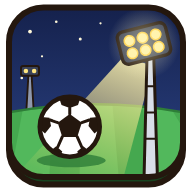

Unter Flutlicht
Welche Spielart heute? Deine Spielstände bleiben je Spielart getrennt.

Zuletzt gespieltVereinskarriere Klassisch: Ligapyramide mit Auf- und Abstieg, Pokal, Europapokal, Transfermarkt Los Zuletzt gespieltKickdraft Fußball mit NFL-Regeln: Franchise-Liga ohne Abstieg, Draft, Salary Cap, Playoffs Los